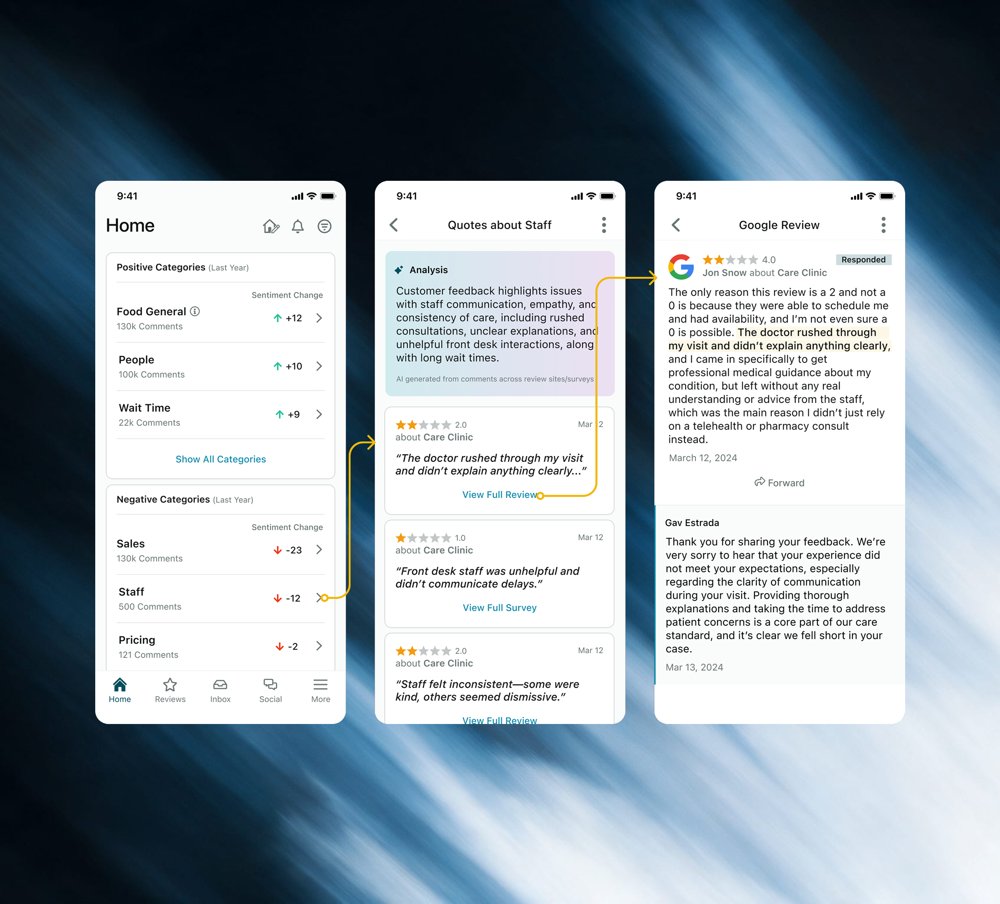
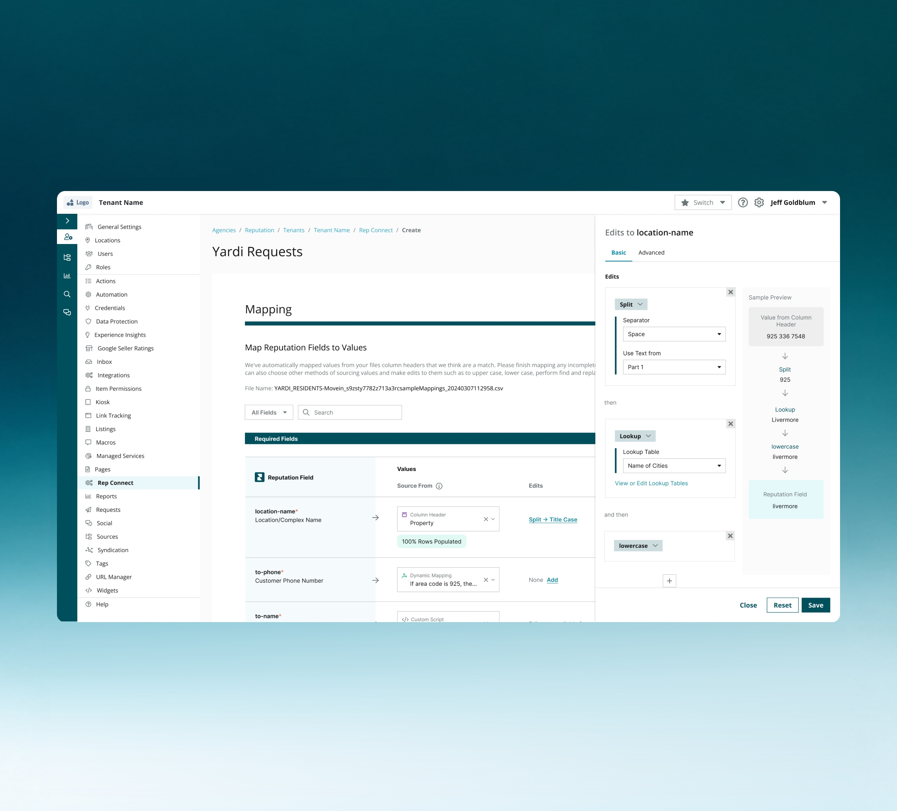
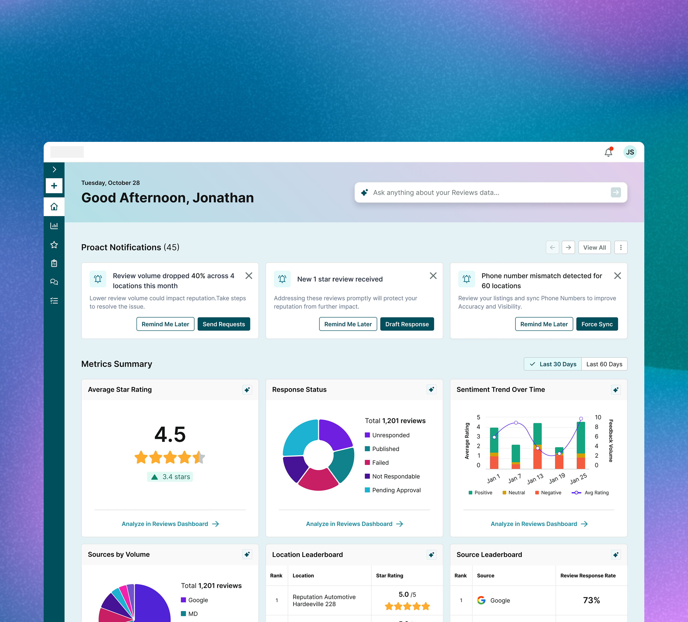
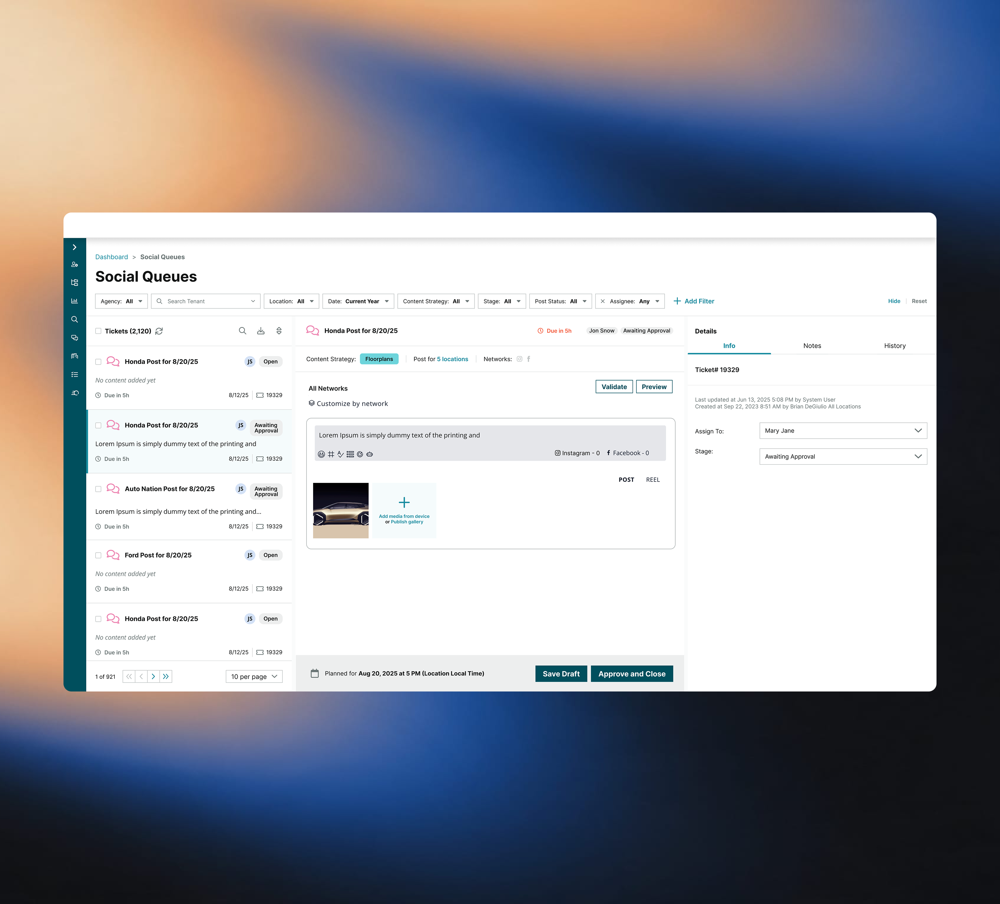

Doubled mobile app DAU/MAU from 20% to 40%
I'm Chris - Lead Product Designer | Design Engineer
Bay Area based. Designing for 8+ years. I enjoy solving problems, creating solutions, researching, and leading.

Doubled mobile app DAU/MAU from 20% to 40%

Users saved 72 hours from completing the task
Internal knowledge base tool enabling teams to ideate faster and with confidence

Enabling users to have a more effective start to their daily workflows.

Simplified complex enterprise social publishing across thousands of locations